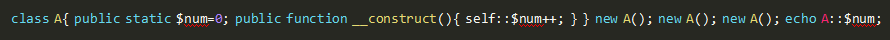
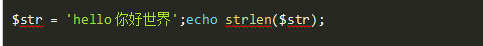
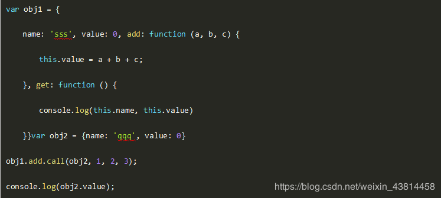
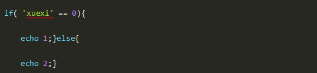

一、单选题（共27题，每题5分）
1.阅读下面PHP代码，并选择输出结果( )

A、0
B、1
C、2
D、3
参考答案：D
答案解析：static属性常驻内存
2.PHP单例模式操作描述错误的是？
A、单例模式第一次实例会被建立以后执行可以直接使用
B、需要一个保存类的唯一实例的静态成员变量
C、构造函数和克隆函数必须声明为私有的
D、必须提供一个访问这个实例的公共的静态方法
参考答案：A
答案解析：PHP中，所有的变量无论是全局变量还是类的静态成员，都是页面级的，每次页面被执行时， 都会重新建立新的对象，都会在页面执行完毕后被清空，这样似乎PHP单例模式就没有什么意义了， 所以PHP单例模式只是针对单次页面级请求时出现多个应用场景并需要共享同一对象资源时有意义
3.下面那个不是mysql存储引擎的锁类型？
A、表锁
B、页锁
C、行锁
D、无
参考答案：B
答案解析：mysql中myisam是有表锁，innodb是行锁，基于索引加锁，如果where条件没有索引，是所有行加锁；sql server才有页锁
4.以下哪条不是PHP语言的特性？
A、开源
B、免费
C、基于客户端
D、便捷高效
参考答案：C
答案解析：PHP语言的特性为：开源、免费和便捷高效。
5.关于PHP模式修饰符说法错误的是？
A、i 大小写不敏感匹配
B、m ^将只匹配字符串的开头
C、x 空白和#注释将被忽略
D、将替换后的字符串作为php代码评估执行
参考答案：B
答案解析：m为增强的行锚点模式，\\n的前后也会被认为结束和开始
6.关于Laravel中间件错误的是？
A、运行Artisan 命令 make:middleware 创建新的中间件
B、可定义前置 & 后置中间件
C、中间件是代理模式
D、中间件是中介模式
参考答案：C
答案解析：运行Artisan 命令 make:middleware 创建新的中间件 可定义前置 & 后置中间件
7.要激活GD库，必须启用配置文件中的（ ）命令
A、php_gd2.dll
B、PHP.dll
C、PHP.ini
D、php_mbstring.dll
8.关于在PHP中的socket，说法错误的是
A、可使用fsocketopen函数建立socket连接
B、工作在第七层，可基于TCP和UDP协议
C、在PHP中默认超时时间是30秒
D、工作在第四层，可基于TCP和UDP协议
参考答案：B
答案解析：工作在第四层，可基于TCP和UDP协议 在PHP中默认超时时间是30秒
9.JSON格式数据，错误的是？
A、JSON一种轻量级的数据交换格式
B、JSON采用完全独立于语言的文本格式，但是也使用了类似于C语言家族的习惯（包括C, C++, C#, Java, JavaScript, Perl, Python等）
C、这些特性使JSON成为理想的数据交换语言。易于人阅读和编写，同时也易于机器解析和生成(网络传输速率)。
D、值是无序列表
参考答案：D
答案解析：值是有序列表
10.关于PHP数组排序原理，错误的是?
A、申请n个额外空间
B、遍历双链表
C、排序后单链表中节点的位置发生变化，因而调整指定指向
D、设置HashTable的pListTail
参考答案：C
答案解析：1.申请n个额外空间 2.遍历双链表 3.调用排序函数zend\_qsort(内部是快速排序算法)对数组排序 4.排序后，双链表中节点的位置发生变化，因而调整指定指向 5.遍历数组，分别设置每一个节点的pListLast和pListNext 6.设置HashTable的pListTail
很多人在刚接触这个行业的时候或者是在遇到瓶颈期的时候，总会遇到一些问题，比如学了一段时间感觉没有方向感，不知道该从那里入手去学习，对此我整理了一些资料，需要的可以免费分享给大家（11年架构师带你解读年薪50万面试通关秘籍。）
如果喜欢我的文章，想与一群资深开发者一起交流学习的话，获取更多相关大厂面试咨询和指导，欢迎加入我的学习交流群点击此处PHP高级交流
11.关于Redis的应用场景，以下说法不正确的是？
A、交集，并集，差集
B、计数器、队列
C、排行榜
D、新闻发布系统
12.关于漏洞扫描的描述，以下哪项是错误的？
A、漏洞扫描是一种基于网络远程检测目标网络或主机安全性脆弱性的技术，可以被用来进行模拟攻击实验和安全审计．
B、漏洞扫描用来探测目标主机系统是否存在漏洞，一般是对目标主机进行特定漏洞的扫描．
C、漏洞扫描就是一种被动的防范措施，可以有效避免黑客攻击行为．
D、可以根据Ping扫描和端口扫描的结果进行漏洞扫描．
参考答案：C
答案解析：漏洞扫描是一种主动的防范措施，能有效避免黑客攻击行为，做到防患于未然安全扫描就是一种主动的防范措施
13.PHP程序使用utf-8编码, 以下程序输出结果是什么?

A、9
B、13(gbk)
C、18
D、17(utf8)
参考答案：D
答案解析：strlen() 函数返回字符串的长度。utf-8编码一个汉字是3个字符，5个英文字符+3字符\*4个中文=17个字符
14.栈和队列具有相同的（）
A、抽象数据类型
B、逻辑结构
C、存储结构
D、运算
参考答案：B
答案解析：线性表、栈、队列的逻辑结构是一样的，都属于线性结构。只是他们对数据的运算不同，从而表现出不同的特点
15.为什么InnoDB表要建议用自增列做主键？
A、使用自增列(INT/BIGINT类型)做主键，这时候写入顺序是自增的，和B+数叶子节点分裂顺序一致
B、无
C、该表不指定自增列做主键，同时也没有可以被选为主键的唯一索引(上面的条件)，这时候InnoDB会选择内置的ROWID作为主键，写入顺序和ROWID增长顺序一致
D、使用自增列(INT/BIGINT类型)做主键，这时候写入顺序是自增的，和B+数叶子节点分裂顺序一致； 该表不指定自增列做主键，同时也没有可以被选为主键的唯一索引(上面的条件)，这时候InnoDB会选择内置的ROWID作为主键，写入顺序和ROWID增长顺序一致； 除此以外，如果一个InnoDB表又没有显示主键，又有可以被选择为主键的唯一索引，但该唯一索引可能不是递增关系时(例如字符串、UUID、多字段联合唯一索引的情况)，该表的存取效率就会比较差
16.对以下Javascript代码说法正确的是？

A、值为 0
B、obj2引用了obj1的方法
C、执行call时，函数里的this指向obj1
D、最后obj1的value值为6
17.以下关于引用说法错误的是？
A、引用不是C的指针
B、引用不允许用两个变量来指向同一个内容
C、用引用可以传递变量
D、可以将一个变量通过引用传递给函数，这样该函数就可以修改其参数的值。
参考答案：B
答案解析：引用是允许用两个变量来指向同一个内容的
18.GoAccess虽然很强大但是他不能做以下哪项工作？
A、生成统计数据带宽统计
B、可生成HTML报告
C、可发送HTTP请求
D、各HTTP状态码统计
19.关于线程的，说法错误的是?
A、线程是进程的一个实体,是CPU调度和分派的基本单位
B、它是比进程更小的能独立运行的基本单位
C、线程和进程一样拥有系统资源
D、线程自己基本上不拥有系统资源
20.关于php文件指针的说法错误的是？
A、feeek() 移动文件指针到指定位置
B、fcreate() 用于创建一个文件
C、rewind（）将文件指针设为文件流的开头
D、feof() 测试文件指针是否到达文件结束的位置
21.下边是php的函数而不是语言结构的是？
A、eval()
B、require_once()
C、list()
D、empty()
22.该正则可以匹配下列哪个字符串？ /^sjm/
A、absjm
B、phpsjm
C、sjmphp
D、phpsimd
23.下列哪个选项可以查看php运行模式？
A、php -r phpinfo();|find / grep"Server API"
B、php -r "echo php_sapi_name();"
C、phpinfo();
D、以上都是
24.以下inode不包含的是？
A、文件的读写权限
B、文件的位置
C、当前目录下的文件数
D、文件的时间戳
25.以下代码输出的结果是？

A、1
B、2
C、3
D、4
26.把CSS样式表与HTML网页关联，不正确的方法是（ ）。
A、在HTML文档的<head>标签内定义CSS样式
B、用@import引入样式表文件
C、在HTML文档的<!-- -->标签内定义CSS样式
D、用<link>标签链接网上可访问的CSS样式表文件
27.一下哪个不是PHP的运行模式？
A、CGI
B、FastCGI
C、apache2handler
D、apache
二、多选题（共3题，每题5分）
1.分库分表之后，id 主键如何处理？
A、单库生成自增 id
B、设置数据库 sequence 或者表自增字段步长
C、UUID
D、snowflake 算法